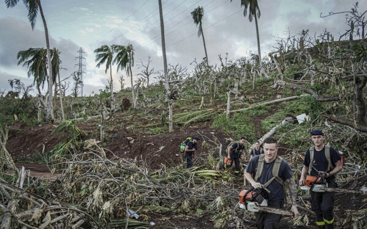
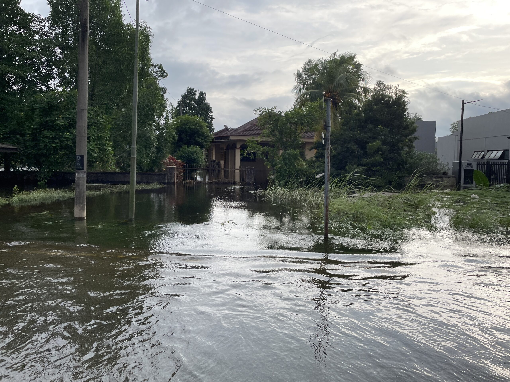
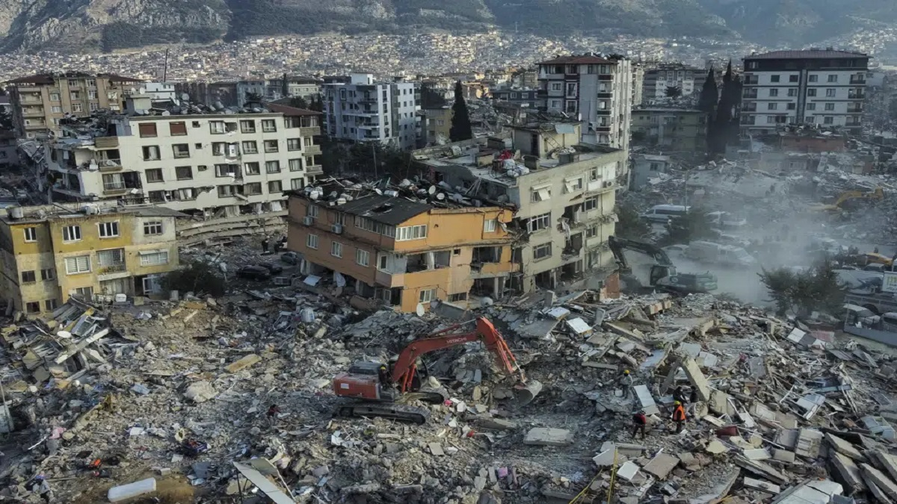

Natural Hazards & Severe Weather Events

In January 2025, California faced a series of devastating wildfires, primarily affecting Los Angeles and surrounding counties. The fires, intensified by severe drought conditions and powerful Santa Ana winds, led to the loss of at least 29 lives, the destruction of over 18,000 structures, and the displacement of nearly 200,000 residents. The Palisades and Eaton fires were among the most destructive, severely impacting communities like Pacific Palisades and Altadena. The aftermath has raised concerns about potential gentrification, as residents fear being forced out during the rebuilding process. Compounding the crisis, a federal funding freeze has halted critical wildfire prevention programs, further challenging recovery and mitigation efforts...

In December 2024, Tropical Cyclone Chido wrought significant devastation across parts of the Southwest Indian Ocean. The cyclone made landfall on December 14 in the French overseas department of Mayotte, resulting in catastrophic damage and a tragic loss of life. Official reports confirmed 31 fatalities in Mayotte; however, local authorities feared the actual death toll could be higher, potentially reaching into the hundreds, due to the large number of undocumented migrants and the extensive destruction of informal settlements. The cyclone's impact led to severe water shortages and widespread displacement, prompting a delayed but substantial response from French aid agencies. French President Emmanuel Macron visited the island to assess the damage and address the concerns of the affected population. Following its path westward, Cyclone Chido struck Mozambique's eastern coast on December 15, causing further devastation....

In late November 2024, Southeast Asia experienced severe flooding, particularly affecting Thailand and Malaysia. The floods resulted in the tragic loss of 27 lives across both countries, marking one of the most devastating flood events in the region in recent years.
DISASTERPHILANTHROPY.ORG
In Malaysia, the northeastern state of Kelantan was among the hardest hit, with over 40,000 residents displaced and seeking refuge in temporary shelters. Health volunteers expressed concerns about potential outbreaks of waterborne diseases, as relief centers reported nearly 5,000 cases of infectious illnesses, including stomach flu, respiratory infections, and skin conditions. The Malaysian Medical Relief Society (MERCY Malaysia) prepared hygiene kits and initiated child engagement activities to mitigate health risks associated with the floods.

In early September 2024, Typhoon Yagi emerged as a formidable and destructive force in Southeast Asia. Originating in the western Philippine Sea, Yagi intensified rapidly, making its initial landfall in the Philippines on September 2, where it was locally known as Typhoon Enteng. The storm caused severe flooding and landslides, resulting in 21 fatalities and widespread displacement.
IFRC.ORG
Continuing its westward trajectory, Yagi struck China's Hainan Island before making a devastating landfall in Vietnam's Quang Ninh province and Hai Phong City on September 7. This marked one of the most powerful storms to hit Vietnam in three decades, leading to catastrophic flooding and landslides. The Vietnamese government reported 321 deaths, with 24 individuals missing and nearly 2,000 injured.

On February 6, 2023, a catastrophic 7.8-magnitude earthquake struck southern Turkey and northwest Syria, resulting in over 55,000 fatalities and injuring more than 107,000 individuals.
REUTERS.COM
The quake caused the collapse of nearly 40,000 buildings and severely damaged approximately 200,000 more, leaving hundreds of thousands homeless.
FRANCE24.COM
In the two years since the disaster, recovery efforts have faced significant challenges, including delays in reconstruction and ongoing humanitarian needs. As of February 2025, many survivors continue to await permanent housing solutions, and the region still grapples with the long-term impacts of the earthquake.